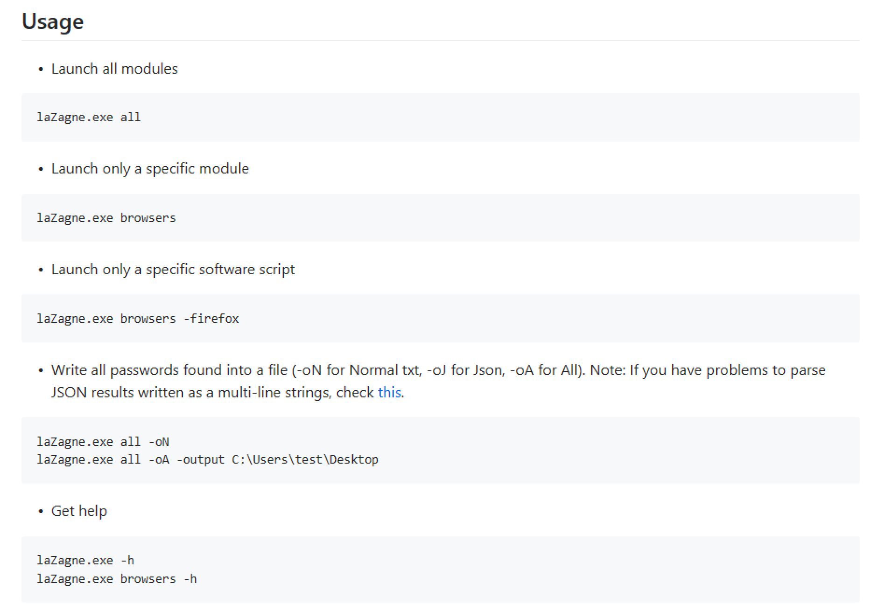

May 21, 2021
In this tutorial we will see how to retrieve or extract passwords from the local computer. For this demo we will be using the Firefox browser to login to our email account. Then we run lazagne to retrieve the stored password.
This is the GitHub page for LaZagne where we can download it.
This gives quick introduction to LaZagne.
This shows some usage examples for LaZagne.
We can also download a standalone executable of LaZagne if we choose to do so. This is what I have done for this demo.
We have successfully downloaded LaZagne from GitHub.
We can see that lazagne.exe resides in the Downloads directory.
Running lazagne.exe --help shows the available options for LaZagne. We can see the different modules available. We will be using the browsers module to retrieve passwords from the browser.
Running lazagne.exe browsers -h shows the different options available for the browsers module.
These are the different browsers supported by LaZagne.
We can output our results in these formats.
This shows that I have logged into my Gmail account.
If prompted, click on "Remember" to have the browser save your password.
Running lazagne.exe browsers tries to retrieve the password from the installed browser(s) on the system. In this case, it was successfull, and it revealed the username and password.
However, we could have been more specific and entered in the name of the browser from which we want to retrieve the password. In this case we run lazagne.exe browsers -firefox to retrieve passwords from the Firefox browser. And there is our username and password printed in cleartext on the screen.
You can follow me on Twitter 0xmaCyberSec.